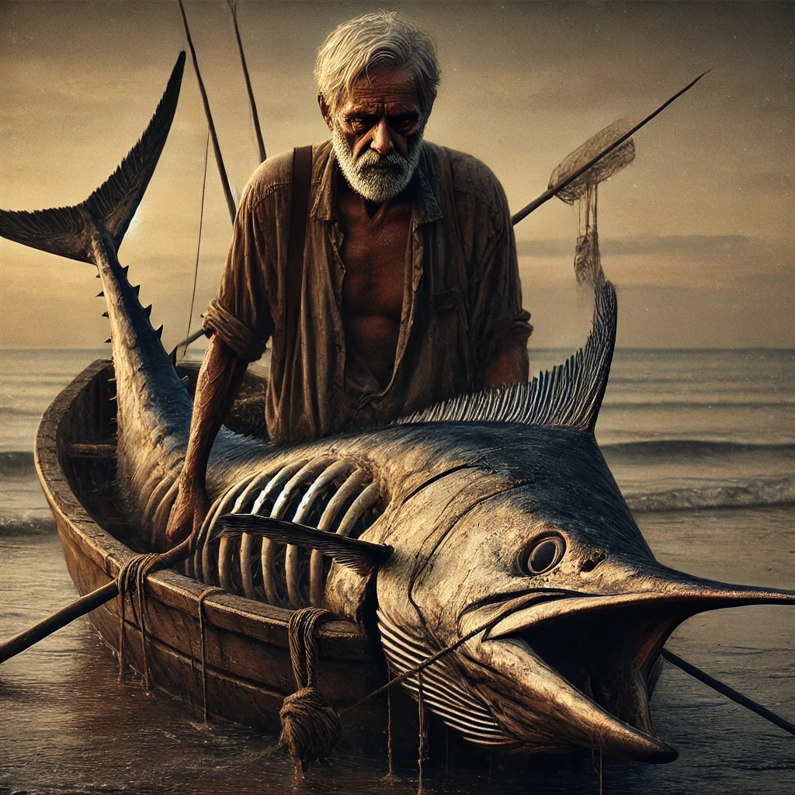

theoldmanandthesea
목차
작가
Ernest Hemingway
출판일
1952년
감상평에 대한 AI그림
노인이 바다에서 아무것도 잡지 못하고 있다가 85일만에 엄청 큰 청새치를 잡고 육지로 돌아오는 과정에서 기상상태 악화,상어등의 공격을 받아 청새치의 살점을 다 잃고 육지에 돌아오는 내용을 담은 책으로 간단한 스토리지만 그 안에 85일간 아무것도 잡지 못하는 상황에서도 좌절하지않고 끈기있게 계속 도전하는 모습 또 물고기를 결국에는 잡았으나 돌아오는 길에 고난과 시련을 만나 결국 모든 걸 잃고 마지막에는 허탈하게 잠에드는 모습등등 인간의 심리적 철학적 고민을 하게 만드는 책이다

감상평에 대한 AI평가
이 감상평은 다음의 감정을 중심으로 구성되어 있습니다
✨ 끈기와 희망 – 85일 동안 아무것도 잡지 못하는 절망적인 상황에서도 포기하지 않고 도전하는 노인의 모습은 강한 의지와 희망을 보여준다. 그의 집념이 독자에게 감동과 경외감을 불러일으킨다.
✨ 좌절과 상실의 아픔 – 거대한 청새치를 잡았지만, 기상 악화와 상어들의 공격으로 결국 모든 것을 잃고 만다. 이 과정에서 인간이 얼마나 무력할 수 있는지를 느끼며, 씁쓸함과 안타까움이 밀려온다.
&#허탈함과 깊은 성찰 – 결국 허탈한 마음으로 잠에 드는 노인의 모습은 인생의 덧없음과 도전의 의미를 다시금 생각하게 만든다. 성공과 실패, 인간의 한계와 운명에 대해 깊은 철학적 고민을 하게 되는 순간이다.